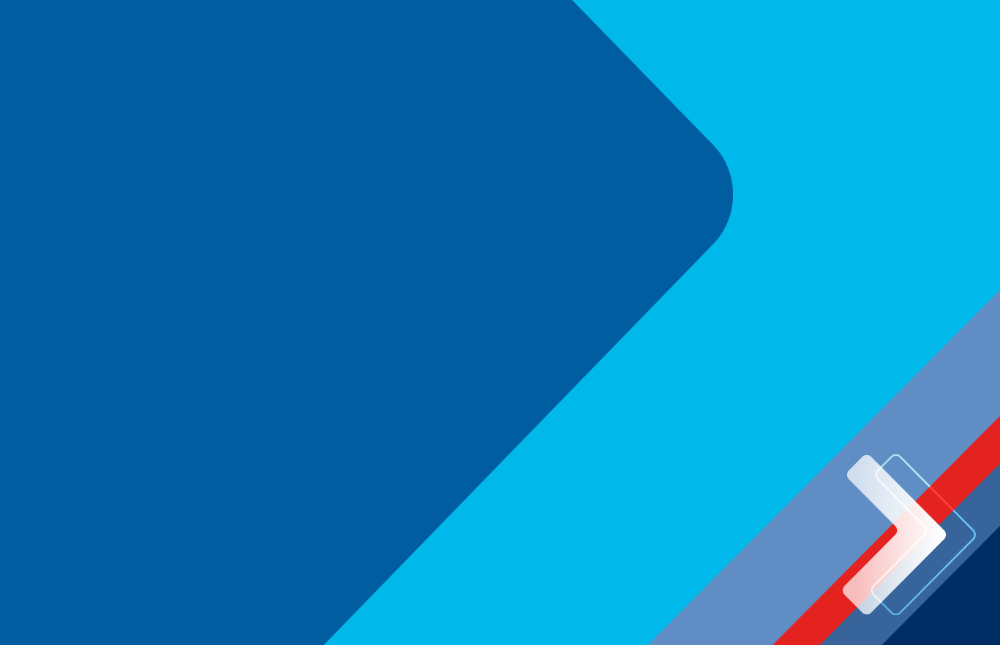

<ion-header  [translucent]="true">
  <ion-toolbar >
    <ion-buttons slot="start" >
      <ion-menu-button></ion-menu-button>
    </ion-buttons>
    <ion-img src="../../assets/imgs/logo_rc_200px.png" style="height: auto; max-width: 20vh;"></ion-img>
  </ion-toolbar>
</ion-header>

<ion-content class="">
  
</ion-content>
